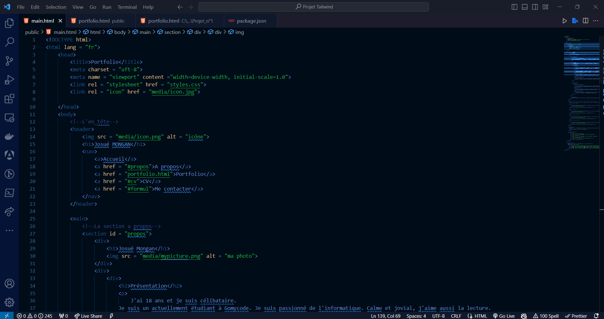
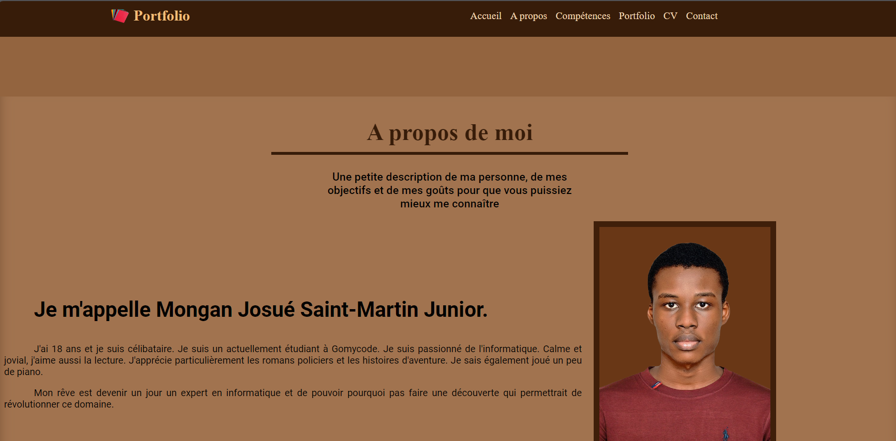
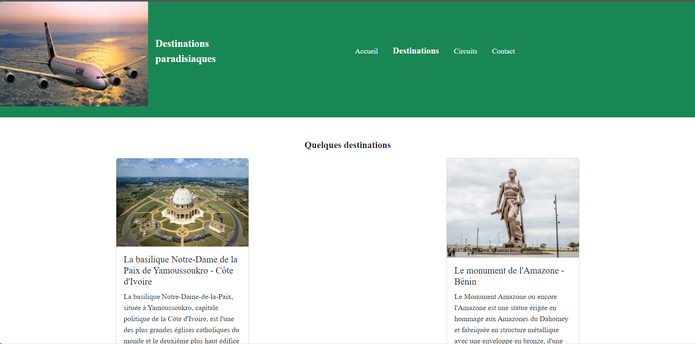
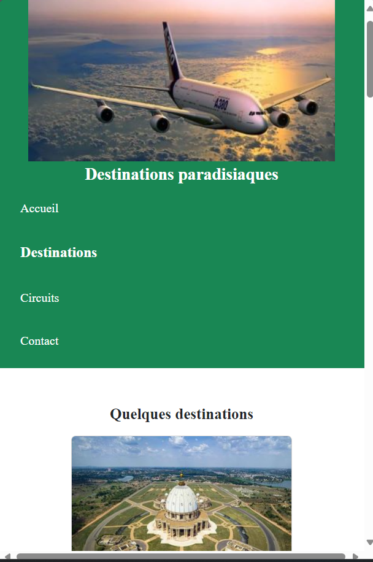
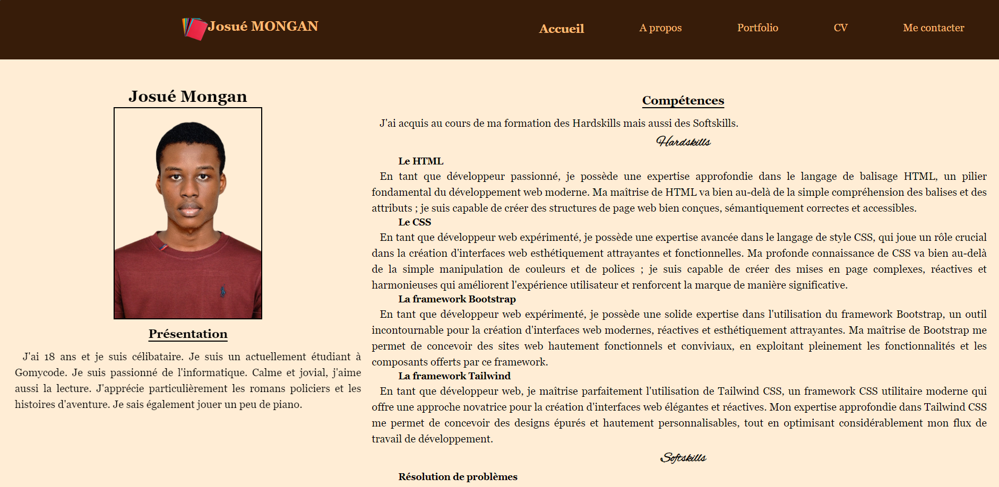

Josué Mongan
Présentation
J'ai 18 ans et je suis célibataire. Je suis un actuellement étudiant à Gomycode. Je suis passionné de l'informatique. Calme et jovial, j'aime aussi la lecture. J'apprécie particulièrement les romans policiers et les histoires d'aventure. Je sais également jouer un peu de piano.
Compétences
J'ai acquis au cours de ma formation des Hardskills mais aussi des Softskills.
Hardskills
- Le HTML
- En tant que développeur passionné, je possède une expertise approfondie dans le langage de balisage HTML, un pilier fondamental du développement web moderne. Ma maîtrise de HTML va bien au-delà de la simple compréhension des balises et des attributs ; je suis capable de créer des structures de page web bien conçues, sémantiquement correctes et accessibles.
- Le CSS
- En tant que développeur web expérimenté, je possède une expertise avancée dans le langage de style CSS, qui joue un rôle crucial dans la création d'interfaces web esthétiquement attrayantes et fonctionnelles. Ma profonde connaissance de CSS va bien au-delà de la simple manipulation de couleurs et de polices ; je suis capable de créer des mises en page complexes, réactives et harmonieuses qui améliorent l'expérience utilisateur et renforcent la marque de manière significative.
- La framework Bootstrap
- En tant que développeur web expérimenté, je possède une solide expertise dans l'utilisation du framework Bootstrap, un outil incontournable pour la création d'interfaces web modernes, réactives et esthétiquement attrayantes. Ma maîtrise de Bootstrap me permet de concevoir des sites web hautement fonctionnels et conviviaux, en exploitant pleinement les fonctionnalités et les composants offerts par ce framework.
- La framework Tailwind
- En tant que développeur web, je maîtrise parfaitement l'utilisation de Tailwind CSS, un framework CSS utilitaire moderne qui offre une approche novatrice pour la création d'interfaces web élégantes et réactives. Mon expertise approfondie dans Tailwind CSS me permet de concevoir des designs épurés et hautement personnalisables, tout en optimisant considérablement mon flux de travail de développement.
Softskills
- Résolution de problèmes
- J'ai une certaine facilité à analyser les situations, à identifier les problèmes et à proposer des solutions appropriées. Ma nature calme me permet également d'analyser les problèmes avec patience afin de trouver la meilleure solution.
- Communication
- Je réussis à communiquer avec les autres et à transmettre mes idées. En plus, ma maitrise de la langue française et aussi de celle anglaise me donne une ceraine flexibilité lors des échanges.
- Le travail en équipe
- Travailler efficacement avec d'autres personnes est aussi un autre de mes atout. D'ailleurs mes capacité de communication m'aident à collaborer et à contribuer à un environnement de travail positif.
Objectifs
Mon rêve est devenir un jour un expert en informatique et de pouvoir pourquoi pas faire une découverte qui permettrait de révolutionner ce domaine.
Aperçu Portfolio
Cette section vous expose un aperçu de mes travaux et projets. Pour plus d'informations, veuillez cliquer sur le bouton qui vous redirigera vers la page contenant l'intégralité de mon portfolio.
HTML
Toute page web ayant besoin d'une structure écrite en HTML, je me suis assuré d'avoir de solides bases dans ce domaine et ce même pour pouvoir travailler sur des projets de grande envergure.
CSS
En utilisant une bonne partie de mes connaissances en CSS, j'ai pu faire le design du site web et le rendre attrayant.
Bootstrap CSS
Le Bootstrap est une framework très utile et intéressante à utiliser dont j'ai fait grandement usage au niveau de ce projet.
Site sur grand écran
Site sur écran mobile
Tailwind CSS
Tailwind est une framework que beaucoup trouvent difficiles. Mais avec de la persévérance j'ai pu obtenir un site web assez intéressant avec cette framework.
